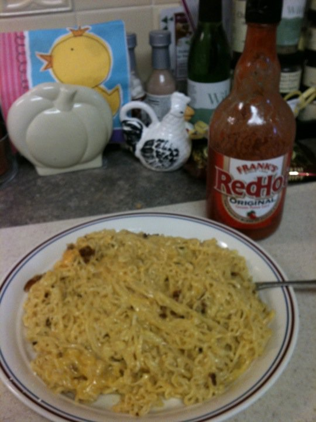

Cheesy Bacon Ramen

This recipe is a great alternative to getting expensive food
delivered after a night of drinking.
Ingredients
- 2 packs of chicken ramen
- ¼ stick of butter
- 4 slices of bacon
- ¼ cup of cheddar cheese
- Frank’s RedHot Sauce, to taste
Steps
- Put water on to boil for ramen.
-
While water boils cook bacon to desired doneness.
Break into pieves when done and set aside.
-
Follow ramen instructions for cooking on stovetop.
Cook until al dente.
Drain broth, leaving around
2 tbsp in the pot.
-
Add cheese, butter, and RedHot Sauce to ramen, mix until all
elements are fully incorporated.
- Transfer contents to bowl, top with bacon, and enjoy!